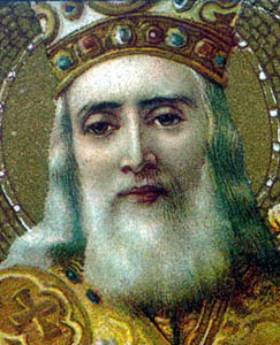

St. Nicholas – Patron Saint
Part 3
The fourth category comprises the trade group. This group is, of course,
closely related with transportation; it is also related to the second category,
material aid in general. The interrelationship can be envisaged in its
progressive development somewhat as follows: from the seafaring merchant to, on
the one hand, the merchant traveling by land (the peddler), and on the other,
overseas trade; from there to commerce in general, comprising its various
specialties. In some cases, St. Nicholas’ protection extended from the trade to
the related fabrication: he was the patron not only of the grain trade
(including, by the way, even brewers and breweries!) but also of bakers’ guilds;
not only of clothing merchants but also in some towns of tailors and weavers.
Eventually the patronage enlarged to include the
most diverse trades. After all, one could pursue in St. Nicholas’ name almost
anything one wanted; he wouldn’t object. Indeed by his whole personality and
character he was suitable to be anybody’s patron. Thus there have been St. Nicholas
guilds of chair menders, cobblers, coopers, cabinet makers, painters,
woodcutters, woodturners, etc.
Others who adopted St. Nicholas as their patron
Saint included: grocers, shopkeepers, tailors, dyers, perfumers, clerical and
shopworkers, cobblers, butchers, meat packers, parish clerks, haberdashers,
farmers, musicians, comedians, candle makers, teachers.
Trade and commerce nevertheless continued to occupy
a special place, particularly the grain trade, including the bakers, and money
exchange; other important trades enjoying the patronage were those in oil,
herbs and spices, and pharmaceutical spirits. The miracle of the manna which cured the sick led to
apothecaries/druggists and oil-merchants taking St. Nicholas for patron.
St. Nicholas is also the patron Saint of both
shepherds and wolves. Lord only know how that
one plays out!
The fifth group is of the countries and cities that
took him on as their patron Saint.
Among the countries that have adopted St. Nicholas
as their patron Saint are:
Ø Russia
Ø Greece
Ø Sicily
Ø Austria
Ø Belgium
Ø France
Ø Germany
Ø Norway
Ø Apulia
Ø Netherlands.
Cities which claim him as their patron Saint include:
Ø Moscow
Ø Naples
Ø Apulia
Ø Liège
Ø Lorraine
Ø Lucerne
Ø Fribourg
Ø Chartres
Ø Troyes
Ø Vitry
Ø Toul
Ø Pont-de-Mousson
Ø Portsmouth, England
Ø Charmes
Ø Luneville
Ø Veyelise
Ø Anjou
Ø Brittany
Ø Campen
Ø Corfu
Ø St. Nicholas at Wade (Kent)
… and numerous other cities in Germany, Austria, Switzerland, Holland, Luxembourg, Belgium and Italy.
Thought to Ponder:
Thought to Discuss around the Dinner Table:

St. Nicholas – Patron Saint
Part 3